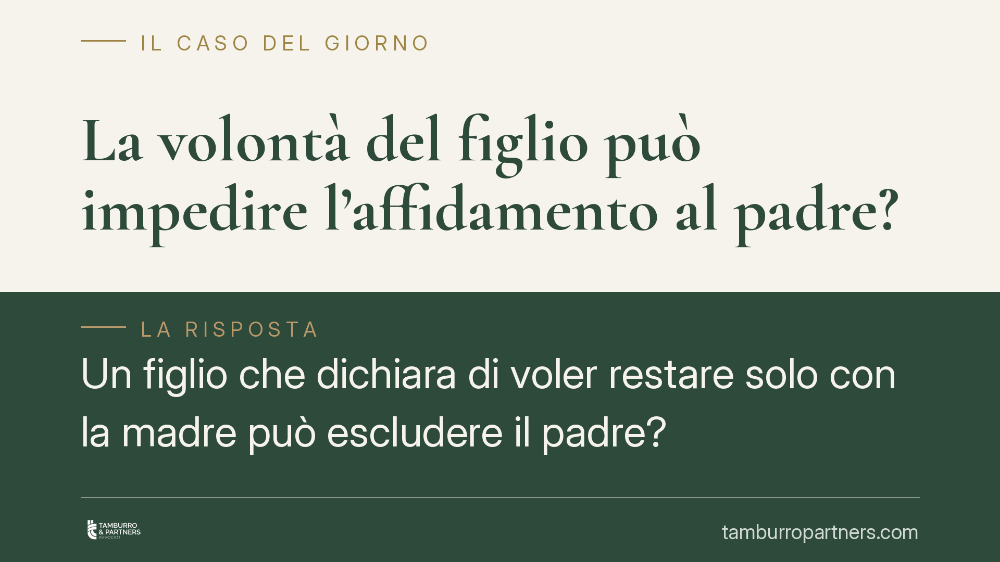

La volontà del figlio può impedire l'affidamento al padre?
Un figlio che dichiara di voler restare solo con la madre può escludere il padre? La Cassazione, in linea con un orientamento ormai consolidato, risponde di no quando quella volontà è il frutto di un condizionamento. L'interesse del minore alla bigenitorialità prevale sulla preferenza manipolata, con possibile revisione di affidamento e collocamento.

Il caso e il principio
Un minore manifesta il desiderio di vivere esclusivamente con la madre e di non frequentare il padre. Dietro quella dichiarazione, però, emerge l'influenza determinante del genitore collocatario, che ostacola in modo sistematico il rapporto con l'altro.
La domanda è netta: la volontà espressa dal figlio può bloccare l'affidamento condiviso o la frequentazione paterna? L'orientamento della Corte di Cassazione è chiaro. Quando la preferenza del minore non è autentica, ma indotta dalla pressione di un genitore, essa non può prevalere sul diritto del figlio a conservare un rapporto equilibrato con entrambe le figure genitoriali.
In questi casi il giudice può arrivare a modificare l'assetto esistente, trasferendo collocamento e affidamento al genitore non ostativo. Non si tratta di una sanzione contro la madre o contro il padre, ma di una misura orientata esclusivamente all'interesse del minore.
Inquadramento normativo
Il perno è l'art. 337-ter c.c., che riconosce al figlio minore il diritto di mantenere un rapporto equilibrato e continuativo con ciascun genitore (principio di bigenitorialità) e impone al giudice di adottare i provvedimenti più utili all'interesse morale e materiale della prole.
L'ascolto del minore va ricostruito con precisione, perché su questo punto circola molta approssimazione. Il diritto del minore a essere ascoltato nelle questioni che lo riguardano ha fondamento nell'art. 315-bis c.c.; le modalità dell'ascolto sono disciplinate dall'art. 336-bis c.c.; sul piano processuale intervengono l'art. 337-octies c.c. e, dopo la riforma Cartabia (D.Lgs. 149/2022), l'art. 473-bis.4 c.p.c.
La regola è che il minore che abbia compiuto i dodici anni, o anche di età inferiore se capace di discernimento, viene ascoltato. Non è però un automatismo rigido: l'ascolto può essere omesso quando risulti contrario all'interesse del minore o manifestamente superfluo, con decisione motivata. Soprattutto, ascoltare il figlio non significa dare esecuzione meccanica alla sua richiesta: il giudice valuta la volontà espressa, ma la pondera alla luce del contesto e della sua genuinità.
Sul versante sovranazionale rileva l'art. 8 CEDU, che tutela la vita privata e familiare. La Corte europea dei diritti dell'uomo ha più volte affermato gli obblighi positivi dello Stato di adoperarsi per preservare il legame tra genitore e figlio, anche contro le resistenze del genitore collocatario.
Implicazioni pratiche
Per il genitore che si vede allontanato dal figlio, la decisione conferma un dato: la dichiarazione del minore non è un verdetto definitivo. Se è dimostrabile un condizionamento, esiste uno spazio concreto per chiedere la revisione delle condizioni.
Per il genitore collocatario, il messaggio è altrettanto preciso: una condotta ostativa, consapevole o meno, può ritorcersi contro di lui e condurre alla perdita del collocamento. La cooperazione nella frequentazione non è una gentilezza, ma un dovere giuridico.
Lo strumento processuale è il procedimento di modifica delle condizioni previsto dall'art. 337-quinquies c.c., oggi incardinato nel rito unitario per le persone, i minorenni e le famiglie (artt. 473-bis ss. c.p.c.). Occorre allegare un mutamento di circostanze e, nei casi di alienazione, documentarlo con rigore.
Cosa fare in concreto
- Documentate le condotte ostative: annotate date, messaggi, mancate consegne del minore, disdette degli incontri. Una prova frammentaria indebolisce la domanda.
- Richiedete una consulenza tecnica: in sede giudiziale, una CTU psicologica può accertare se la volontà del minore sia autentica o indotta.
- Attivate per tempo il procedimento di modifica ex art. 337-quinquies c.c.: l'inerzia prolungata consolida la situazione di fatto e la rende più difficile da ribaltare.
- Mantenete una condotta irreprensibile: evitate reazioni impulsive o mancati versamenti del mantenimento, che possono essere usati contro di voi.
- Valutate il coordinatore genitoriale o percorsi di sostegno: in alcuni casi il giudice apprezza la disponibilità a strumenti di recupero del legame prima di misure più incisive.
Consigliamo di non affrontare queste vicende in autonomia: la ricostruzione probatoria e la scelta dei tempi processuali incidono in modo decisivo sull'esito.
Disclaimer
Contributo informativo a cura di Tamburro & Partners - Avv. Giuseppe Tamburro. Non costituisce parere legale.
Ogni famiglia ha il suo equilibrio.
Separazione, divorzio, affidamento, assegno: se vuoi un confronto riservato su una specifica situazione, scrivi allo studio. Ti rispondiamo entro un giorno lavorativo.